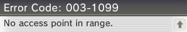

3DS browserhax+slotTool Guide
This guide is outdated!
This page will install custom firmware on all stock 3DS family consoles with a region of USA / EUR / JPN. This guide will not work on consoles from KOR / TWN / CHN.
At this time, this guide is intended for HBL-access convenience (where it is easier to explain than Picross) and for unminable consoles of any sort. While this guide will work in under circumstances, it has been less rigorously tested than the main guide, so it should only be used in the named circumstances.
To be very clear: Don't link this guide to each and every person aiming to install custom firmware.
This guide will bring a console from stock to boot9strap by using old/new-browserhax to gain Homebrew Launcher access, and then by using slotTool to inject an exploited WiFi profile. Once the exploited WiFi profile has been injected, you will use Safe Mode (a recovery feature present on all 3DS consoles) to activate it.
Prerequisites
In order to follow this guide, you must have:
- Any 3DS or 2DS console in the USA, EUR, or JPN regions on the latest firmware (11.13.0-45-U/E/J)
- An SD card formatted as FAT32
- If your SD card is smaller than 2GB, you will be unable to create a NAND backup, which is a critical backup file used in case of a catastrophic software issue
- A working 3DS Internet Browser (used for browserhax)
- Working Safe Mode (used for slotTool)
- Entering Safe Mode requires working left and right shoulder buttons
If you cannot fulfill any one of these prerequisites, STOP, as you will be unable to follow the entirety of this guide.
Safe Mode Test
The instructions provided here will test the console's ability to enter Safe Mode.
- With your system powered off, hold the following buttons: (Left Shoulder) + (Right Shoulder) + (D-Pad Up) + (A), then press (Power)
- Keep holding the buttons until your console boots into Safe Mode
- After some time, your console should show a System Update screen
- This indicates that the console has successfully entered Safe Mode
If you boot into the Home Menu instead of the System Update screen, the console has failed to enter Safe Mode. Try repeating these instructions a few more times, ensuring that you've properly held all of the buttons for the proper amount of time before determining that Safe Mode is inaccessible.
What you need
- Old 3DS users only: The latest release of old-browserhax
- New 3DS users only: The latest release of new-browserhax
- The latest release of Luma3DS
- The latest release of slotTool
Section I - Prep Work
- Copy
boot.firmandboot.3dsxfrom the Luma3DS.zip(Luma3DSv10.2.zip) to the root of your SD card- The root of the SD card refers to the initial directory on your SD card where you can see the
Nintendo 3DSfolder, but are not inside of it
- The root of the SD card refers to the initial directory on your SD card where you can see the
- Create a folder named
3dson the root of your SD card- This folder stores homebrew applications and data; it is different from the
Nintendo 3DSfolder that you probably aleady have
- This folder stores homebrew applications and data; it is different from the
- Copy
slotTool.3dsxto the3dsfolder - Copy
usm.binfrom the unSAFE_MODE.zipto the root of your SD card - Copy the contents of the folder corresponding to your console's region inside of the browserhax
.zip(release_v1.0.zip) to the root of your SD cardarm11code.binandbrowserhax_hblauncher_ropbin_payload.bin- If you are unsure of your console's region, you can find it in the final letter of the version string in System Settings: U is USA, E is EUROPE, and J is JAPAN
Section II - browserhax + slotTool
- Power on your device
- Open the Internet Browser (visual aid)
- Alternatively, scan this QR code
- Type
https://zoogie.github.io/web/nbhaxinto the address bar - Click on the "PROCEED TO HAXX" button
- Your device should eventually load into the Homebrew Launcher
- If your device freezes on a yellow screen, try again
- If your device freezes on a different coloured screen, or you see "An error has occurred", ensure that your file placement is correct and that you have selected the files corresponding to your console's region and model
- Launch slotTool from the list of homebrew
- If you get stuck on a red screen, forcefully power off the console by holding the power button for fifteen seconds, then retry this section
- Select the "INSTALL exploit to wifi slots 1,2,3 & shutdown" option
- You will see some on-screen text and then your system will shutdown
{kind=link}
Section III - unSAFE_MODE
- With your system still powered off, hold the following buttons: (Left Shoulder) + (Right Shoulder) + (D-Pad Up) + (A), then press (Power)
- Keep holding the buttons until your console boots into Safe Mode
- Press "OK" to accept the update
- There is no update. This is part of the exploit
- Press "I accept" to accept the terms and conditions
- The update will eventually fail, with error code
003-1099. This is intended behaviour - When asked "Would you like to configure Internet settings?", select "Yes"
- On the following menu, navigate to
Connection 1->Change Settings->Next Page (right arrow)->Proxy Settings->Detailed Setup(visual aid) - Once you see
B9S install SUCCESSon the top screen, press any button to reboot to Luma Configuration- If you are stuck on the
B9S install SUCCESSscreen, it is safe to forcefully turn off the console by holding the power button for 15 seconds
- If you are stuck on the
{kind=link}
Section IV - Configuring Luma3DS
- Your device should automatically show the Luma Configuration menu
- If you do not see the Luma Configuration menu, turn off the console and hold SELECT while turning on the console to access it
- Use the (A) button and the D-Pad to turn on the following:
- "Show NAND or user string in System Settings"
(x)indicates that the option has been turned on
- Press (Start) to save and reboot
- Your device should load the Home Menu after a short delay
Section V - Restoring WiFi Configuration Profiles
- Launch the Download Play application
- Wait until you see the two buttons
- Do not select either of the options
- Press (Left Shoulder) + (D-Pad Down) + (Select) at the same time to open the Rosalina menu
- Select "Miscellaneous options"
- Select "Switch the hb. title to the current app."
- Press (B) to continue
- Press (B) to return to the Rosalina main menu
- Press (B) to exit the Rosalina menu
- Press (Home), then close Download Play
- Launch the Download Play application
- Your device should load the Homebrew Launcher
- Launch slotTool from the list of homebrew
- Select "RESTORE original wifi slots 1,2,3"
- Your device will reboot
Continue to Finalizing Setup
Credits
- ItsPizzaTime1501 for writing the slotTool portion of this guide
- zoogie for creating these exploits: unSAFE_MODE, new-browserhax, and old-browserhax